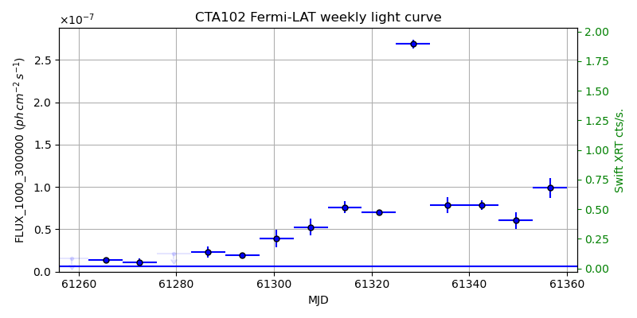

LAT Lightcurve site: https://fermi.gsfc.nasa.gov/ssc/data/access/lat/msl_lc/source/CTA_102
Swift site: https://www.swift.psu.edu/monitoring/source.php?source=CTA102
NED: Query
Time of last update of this page: UT: 2026-11-28 16:29 (MJD: 61372.687)
| Property | Value |
|---|---|
| R.A. | 22:32:36.48 |
| Dec. | 11:43:51.6 |
| z | 1.032 |
| 3FGL SpectrumType | LogParabola |
| 3FGL PL Index | |
| 3FGL Flux_100_300000 | 1.68e-07 1 / (s cm2) |
| 3FGL Flux_1000_300000 | 6.39e-09 1 / (s cm2) |
| 3FGL Flux >200 GeV | 3.94e-13 1 / (s cm2) |
| 3FGL Extrap. Crab >200 GeV | 0.00 |
| 3FGL Flux After EBL Absorption >200GeV | 7.20e-15 1 / (s cm2) |
| 3FGL EBL Crab Fraction >200GeV | 0.00 |
| MJD | dMJD | Flux | dFlux | Frac3FGL | FracCrab>200GeV | EBLFracCrab>200GeV |
|---|---|---|---|---|---|---|
| 61367.50 | 0.50 | 1.36e-06 | 1.76e-07 | 8.10 | 0.01 | 0.00 |
| 61368.50 | 0.50 | 1.86e-06 | 1.13e-07 | 11.09 | 0.02 | 0.00 |
| 61369.50 | 0.50 | 1.86e-06 | 1.95e-07 | 11.10 | 0.02 | 0.00 |
| 61370.50 | 0.50 | 1.13e-06 | 1.58e-07 | 6.73 | 0.01 | 0.00 |
| 61371.50 | 0.50 | 1.63e-06 | 8.79e-08 | 9.72 | 0.02 | 0.00 |

| MJD | dMJD | Flux | dFlux | Frac3FGL | FracCrab>200GeV | EBLFracCrab>200GeV |
|---|---|---|---|---|---|---|
| 61335.50 | 3.50 | 1.67e-06 | 9.30e-08 | 9.94 | 0.02 | 0.00 |
| 61342.50 | 3.50 | 1.50e-06 | 1.01e-08 | 8.92 | 0.01 | 0.00 |
| 61349.50 | 3.50 | 1.50e-06 | 9.61e-08 | 8.90 | 0.01 | 0.00 |
| 61356.50 | 3.50 | 1.82e-06 | 9.43e-08 | 10.81 | 0.02 | 0.00 |
| 61363.50 | 3.50 | 1.74e-06 | 7.90e-08 | 10.36 | 0.02 | 0.00 |

| MJD | dMJD | Flux | dFlux | Frac3FGL | FracCrab>200GeV | EBLFracCrab>200GeV |
|---|---|---|---|---|---|---|
| 61367.50 | 0.50 | 6.74e-08 | 1.81e-08 | 10.54 | 0.02 | 0.00 |
| 61368.50 | 0.50 | 1.08e-07 | 1.56e-08 | 16.89 | 0.03 | 0.00 |
| 61369.50 | 0.50 | 1.16e-07 | 8.49e-09 | 18.18 | 0.03 | 0.00 |
| 61370.50 | 0.50 | 1.07e-07 | 2.78e-08 | 16.78 | 0.03 | 0.00 |
| 61371.50 | 0.50 | 6.00e-08 | 4.44e-09 | 9.38 | 0.02 | 0.00 |

| MJD | dMJD | Flux | dFlux | Frac3FGL | FracCrab>200GeV | EBLFracCrab>200GeV |
|---|---|---|---|---|---|---|
| 61335.50 | 3.50 | 7.87e-08 | 9.32e-09 | 12.32 | 0.02 | 0.00 |
| 61342.50 | 3.50 | 7.88e-08 | 5.67e-09 | 12.32 | 0.02 | 0.00 |
| 61349.50 | 3.50 | 6.05e-08 | 9.69e-09 | 9.46 | 0.02 | 0.00 |
| 61356.50 | 3.50 | 9.89e-08 | 1.16e-08 | 15.48 | 0.03 | 0.00 |
| 61363.50 | 3.50 | 7.76e-08 | 9.40e-09 | 12.14 | 0.02 | 0.00 |
--------------------------------------------------------- Using user-supplied coords: 22:32:36.48 11:43:51.6 2000 --------------------------------------------------------- FLWO UT night of: 2026-11-29 Local Sid. @ Midnight: 04:08 Sunset (-15.0) (local, UT): 18:31 01:31 Sunrise (-15.0) (local, UT): 05:53 12:53 Moonrise (local, UT): 21:57 04:57 Moonset (local, UT): Moon phase: 0.72 --------------------------------------------------------- AzTime LSID UT Obj_el Obj_az Mn_el Mn_az Sep. --------------------------------------------------------- 18:31 22:39 01:31 70.2 183.9 -32.9 32.1 139.6 19:01 23:09 02:01 68.6 204.4 -29.4 38.9 140.0 19:31 23:39 02:31 65.1 221.0 -25.4 45.0 140.3 20:01 00:09 03:01 60.4 233.4 -21.0 50.6 140.6 20:31 00:39 03:31 55.0 242.7 -16.2 55.6 140.8 21:01 01:09 04:01 49.1 249.9 -11.1 60.2 141.1 21:31 01:39 04:31 43.0 255.8 -5.4 64.5 141.4 22:01 02:09 05:01 36.7 260.9 0.4 68.5 141.6 22:31 02:39 05:31 30.4 265.3 5.8 72.2 141.9 23:01 03:10 06:01 24.0 269.4 11.6 75.8 142.1 23:31 03:40 06:31 17.6 273.3 17.5 79.4 142.3 00:01 04:10 07:01 11.3 277.1 23.6 82.9 142.6 00:31 04:40 07:31 5.0 281.0 29.7 86.5 142.8 01:01 05:10 08:01 -0.6 284.9 35.8 90.3 143.0 01:31 05:40 08:31 -7.5 289.0 42.0 94.4 143.2 02:01 06:10 09:01 -13.5 293.3 48.1 99.1 143.4 02:31 06:40 09:31 -19.2 298.1 54.2 104.7 143.6 03:01 07:10 10:01 -24.7 303.4 60.1 111.7 143.8 03:31 07:40 10:31 -29.9 309.3 65.6 121.1 143.9 04:01 08:10 11:01 -34.6 316.0 70.5 134.7 144.1 04:31 08:40 11:31 -38.7 323.6 74.0 154.7 144.3 05:01 09:11 12:01 -42.1 332.2 75.2 181.1 144.5 05:31 09:41 12:31 -44.7 341.7 73.6 206.8 144.7 05:53 10:02 12:53 -45.8 349.1 71.0 221.2 144.8 --------------------------------------------------------- Dark hours >55 deg.: 2.00 srcstart (UT): 2026-11-29 01:31 srcend (UT): 2026-11-29 03:31